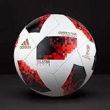
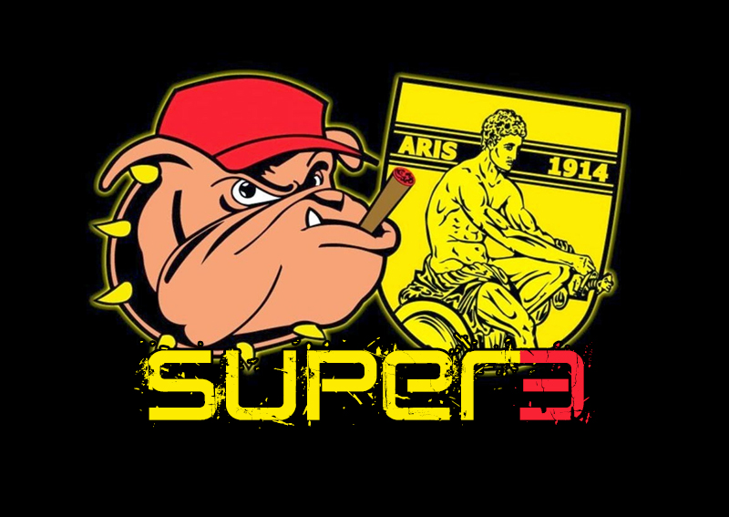
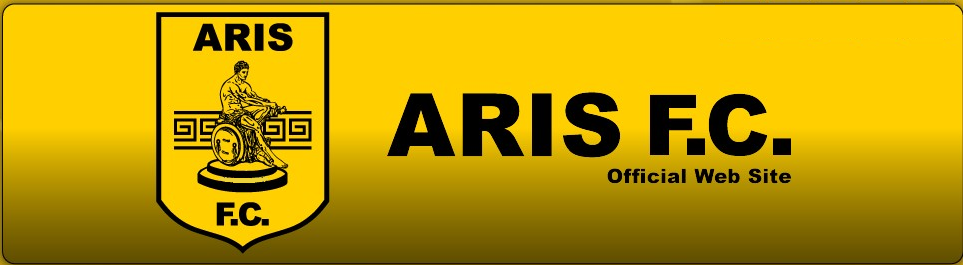

ARIS F.C.
Η "ΠΑΕ Άρης" είναι ένα επαγγελματικό ποδοσφαιρικό σωματείο με έδρα την πόλη της Θεσσαλονίκης. Έχει κατακτήσει συνολικά τέσσερις πανελλήνιους τίτλους, τρία πρωταθλήματα και ένα κύπελλο Ελλάδας. Μεταξύ των τίτλων του είναι το πρώτο Πανελλήνιο πρωτάθλημα Ελλάδας που διοργανώθηκε από την Ελληνική Ποδοσφαιρική Ομοσπονδία (ΕΠΟ) την αγωνιστική περίοδο 1927–28. Ποδοσφαιρική έδρα της ομάδας είναι το ιδιόκτητο γήπεδο Κλεάνθης Βικελίδης, χωρητικότητας 22.800 θεατών. Iστορικά ο Άρης συνδέεται σε μεγάλο βαθμό με τους γηγενείς Μακεδόνες, όσο και με τους εύπορους κατοίκους της πόλης (δεν είναι τυχαίο ότι προπύργιο της οπαδικής του βάσης αποτελεί η "αστική" περιοχή της Αγίας Τριάδας), ενώ κατά τα πρώτα χρόνια ύπαρξής του (μεσοπόλεμος) αποτελούσε τον κατεξοχήν εκπρόσωπο της πολυπολιτισμικής Θεσσαλονίκης και θεματοφύλακα των προοδευτικών ιδεών. Χαρακτηριστικό είναι το γεγονός πως βάσει του καταστατικού του εκγύμναζε αθλητές "εκ πασών των κοινωνικών τάξεων", είχε τμήματα γυναικών ήδη από τη δεκαετία του 1920 και εγκόλπωνε στις τάξεις του ευρύτερες κοινότητες (Αρμενική, τμήμα της Εβραϊκής, πρώτο κύμα Ελλήνων προσφύγων) σε αντίθεση με τον Ηρακλή των συντηρητικών "μπαγιάτηδων" Θεσσαλονικέων. Από την άλλη πλευρά, ο μεγάλος του ανταγωνιστής Π.Α.Ο.Κ., βασίστηκε κατά κύριο λόγο στο προλεταριακό–προσφυγικό στοιχείο.
| TEAM | TITLE |  |
|---|---|---|
| Aris | championship-1928 | |
| Aris | championship-1932 |  |
| Aris | championship-1946 |
 